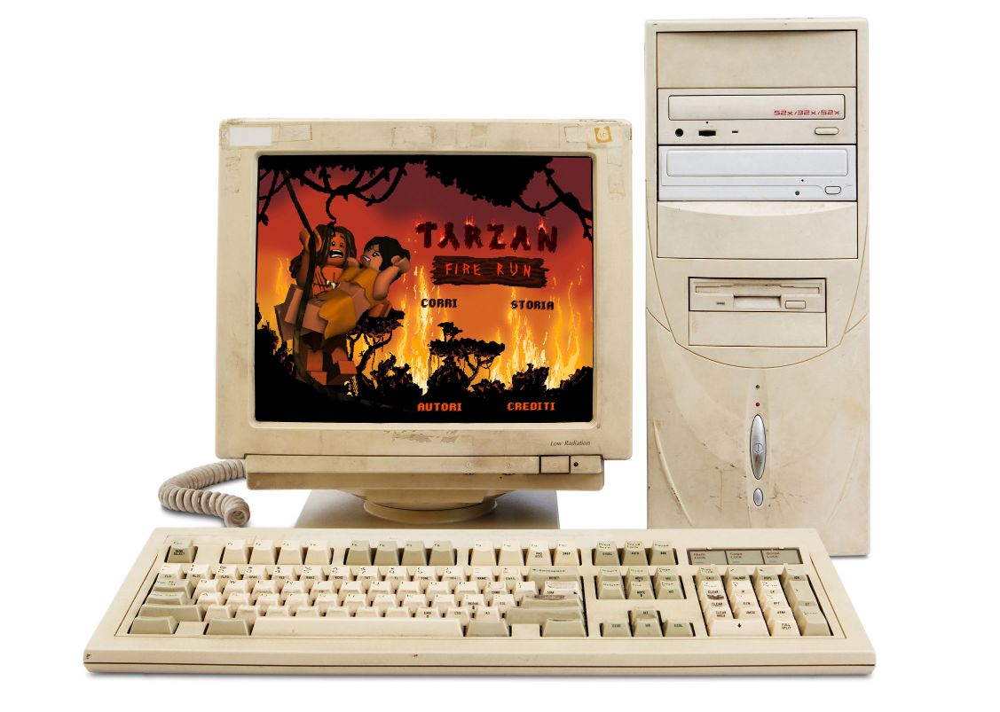
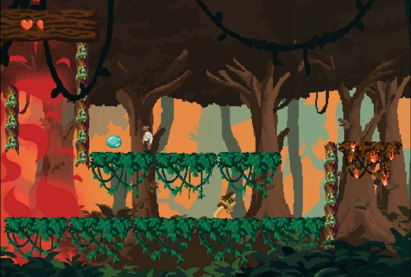
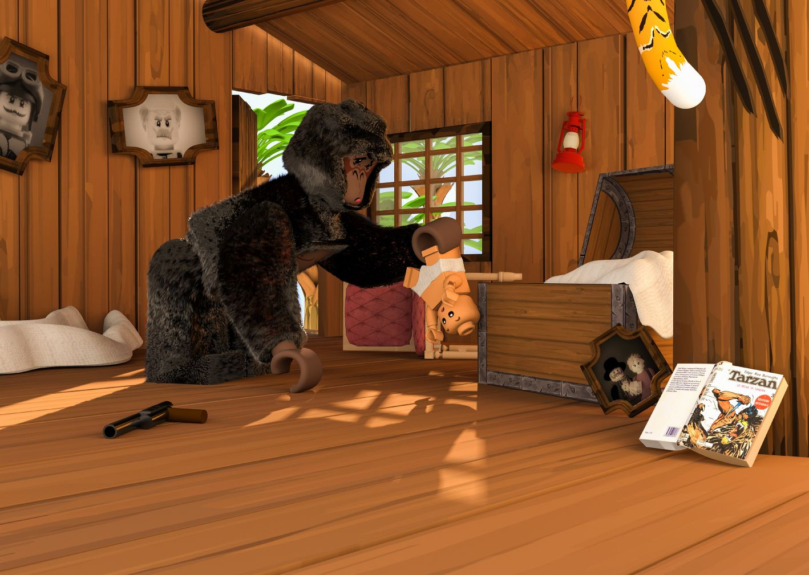

<!DOCTYPE html>
<html lang="en">
  <head>
    <meta charset="utf-8" />
    <meta name="viewport" content="width=device-width, initial-scale=1.0" />

    <title>Andrea Corsini - tarzan</title>
    <link rel="icon" type="image/x-icon" href="assets/favicon.png" />

    <link rel="stylesheet" href="style.css" />

    <script src="libraries/p5.min.js"></script>
  </head>
</html>
<body>
  <a id="titolone" href="javascript:window.open('','_self').close();"
    >andreacorsini.it</a
  >
  <a id="projects" href="javascript:window.open('','_self').close();">back</a>

  <div id="totale">
    <div id="immagini">
      <div style="overflow: scroll">
        
        
        
      </div>
    </div>
    <div id="testi">
      <div id="testo">
        <span style="font-weight: 500; font-size: 3vh">Tarzan - Fire run</span
        ><br /><br />
        This is a project created to give people with visual and hearing
        disabilities the opportunity to enjoy works such as the triptych "Addii,
        versione I" by Umberto Boccioni, in the “Controsenso” exhibition held at
        the Institute for the Blind in Milan.<br />
        The project consists of a video whose audio is halfway between audio
        description and poetic transposition of the paintings in question, to
        describe what happens on the painting but also convey the feelings that
        the style and the brushstroke represent.<br />
        During the exhibition, it was flanked by a tactile artifact that
        markedly reproduced with chalk the direction and grain of the
        brushstrokes of the paintings examined.<br />
        My role was to transpose the paintings into 3D graphic and to transform
        the flat surface into something tangible that referred to tactile
        artefacts, as well as the ideation of the content.<br />
        <br />
        <a
          href="https://donatorenzulli.github.io/TARZAN/index.html"
          style="text-decoration: underline; color: white"
          >Here you can try the game</a
        >
        <br /><br />
        <span style="font-size: 1.5vh">
          in collaboration with:<br />
          Dorotea Anfossi<br />
          Martina Bracchi<br />
          Giovanni Bonassi<br />
          Alessandro Pedriali<br />
          Caterina Ramilli<br />
          Donato Renzulli<br />
          Matteo Visini<br />
        </span>
      </div>
    </div>
  </div>
</body>
